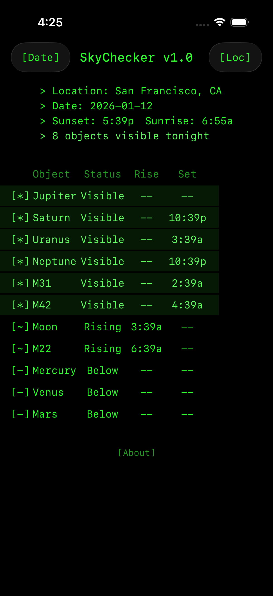

SKYCHECKER
See what's up tonight. Planets, galaxies, ISS, meteor showers — all from your location.

- > Track Moon, planets, deep sky objects, and the ISS
- > Live weather conditions and observation ratings
- > Meteor shower alerts with peak times
- > Equipment difficulty ratings for each object
- > Rise, set, and peak times with compass directions
- > Share tonight's sky with friends
- > Free. No ads. No tracking.
Whether you're an amateur astronomer, a casual stargazer, or just curious about that bright dot in the sky — SkyChecker tells you exactly what's visible from where you're standing, and when to look. Powered by NASA's JPL Horizons ephemeris data and Open-Meteo weather forecasts.

Clear skies. Stay curious.